Contents
- Parte 1 do projeto final
- Carrega robotics toolbox se preciso
- Simulacoes em malha aberta seção 6.3
- Simulacoes usando o ode45
- Simulacao 1
- Simulacao 2
- Simulacao 3
- Simulacao 4
- Simulacoes em malha aberta seção 6.4
- Sem atrito seco e viscoso
- Simulacao 1
- Simulacao 2
- Com atrito
- Simulacao 1
- Simulacao 2
- Simulacoes em malha fechada
- Simulaçao 1
- Simulaçao 2
- Simulaçao 3
- Fix eps
Parte 1 do projeto final
close all, clear all
Carrega robotics toolbox se preciso
if(~exist('rvctools', 'dir')) addpath('../rvctools') addpath('../rvctools/simulink') end if(~exist('SerialLink', 'class')) startup_rvc end
Simulacoes em malha aberta seção 6.3
Carrega o robo, utilizamos o modelo sem perdas por atrito seco entre os links para acelerar e simplificar os calculos, uma vez que esse atrito pode introduzir problemas numéricos.
mdl_puma560; bot = p560.nofriction(); % Posição desejada qdes = [0 pi/2 -pi/2 0 0 0]; % Calcula o torque nescessário para manter a posição desejada com % velocidades angulares e acelerações nulas T = bot.rne(qdes, zeros(1,6), zeros(1,6));
Simulacoes usando o ode45
Simulacao 1
q0 = [0 0 0 0 0 0] %Posicao inicial qd0 = [0 0 0 0 0 0] %Velocidade inicial [time, qdyn1, qddyn] = bot.fdyn(5, @ConstTau, q0, qd0, T); sim1ode = figure; plot(time, qdyn1); xlabel('Tempo(s)') ylabel('Angulo(rad)') title('Resposta de q') legend('q_1', 'q_2', 'q_3', 'q_4', 'q_5', 'q_6'); saveas(sim1ode,'sim1ode.eps','epsc') figure, bot.plot(qdyn1, 'delay', 5/length(time))
q0 =
0 0 0 0 0 0
qd0 =
0 0 0 0 0 0
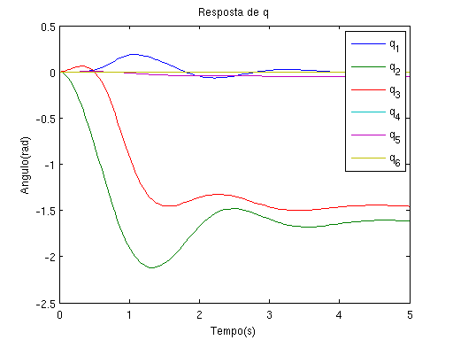 Simulacao 2
q0 = [0 pi -pi/2 0 0 0] %Posicao inicial qd0 = [0 0 0 0 0 0] %Velocidade inicial [time, qdyn2, qddyn] = bot.fdyn(5, @ConstTau, q0, qd0, T); sim2ode = figure; plot(time, qdyn2); xlabel('Tempo(s)') ylabel('Angulo(rad)') title('Resposta de q') legend('q_1', 'q_2', 'q_3', 'q_4', 'q_5', 'q_6'); saveas(sim2ode,'sim2ode.eps','epsc') figure, bot.plot(qdyn2, 'delay', 5/length(time))
q0 =
0 3.1416 -1.5708 0 0 0
qd0 =
0 0 0 0 0 0
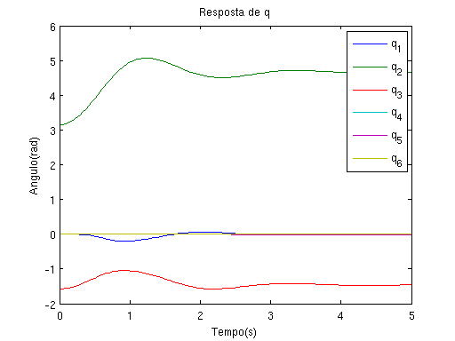 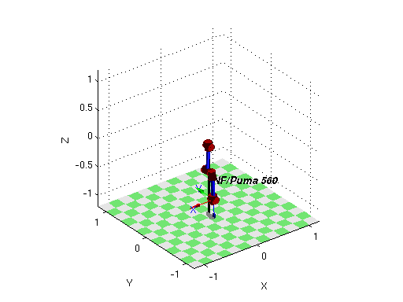 Simulacao 3
q0 = [0 pi/2 -pi/2 0 0 0] %Posicao inicial qd0 = [0 0 0 0 0 0] %Velocidade inicial [time, qdyn3, qddyn] = bot.fdyn(5, @ConstTau, q0, qd0, T); sim3ode = figure; plot(time, qdyn3); xlabel('Tempo(s)') ylabel('Angulo(rad)') title('Resposta de q') legend('q_1', 'q_2', 'q_3', 'q_4', 'q_5', 'q_6'); saveas(sim3ode,'sim3ode.eps','epsc') figure, bot.plot(qdyn3, 'delay', 5/length(time))
q0 =
0 1.5708 -1.5708 0 0 0
qd0 =
0 0 0 0 0 0
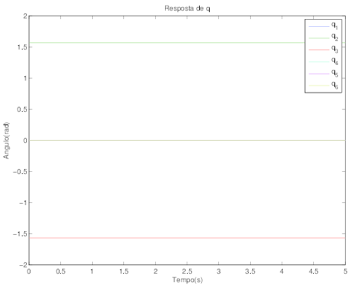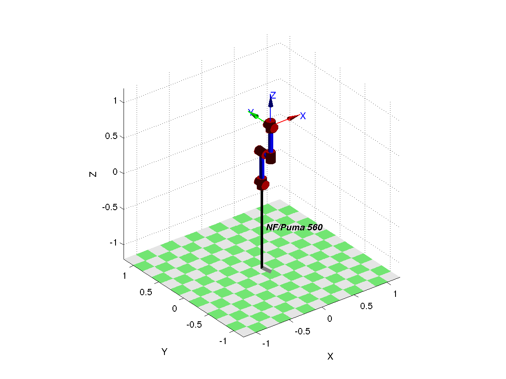 Simulacao 4
q0 = [0 pi/2+0.05 -pi/2 0 0 0] %Posicao inicial qd0 = [0 0 0 0 0 0] %Velocidade inicial [time, qdyn4, qddyn] = bot.fdyn(5, @ConstTau, q0, qd0, T); sim4ode = figure; plot(time, qdyn4); xlabel('Tempo(s)') ylabel('Angulo(rad)') title('Resposta de q') legend('q_1', 'q_2', 'q_3', 'q_4', 'q_5', 'q_6'); saveas(sim4ode,'sim4ode.eps','epsc') figure, bot.plot(qdyn4, 'delay', 5/length(time))
q0 =
0 1.6208 -1.5708 0 0 0
qd0 =
0 0 0 0 0 0
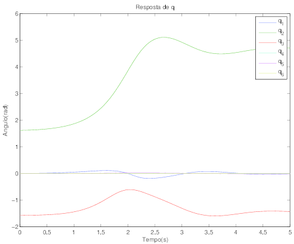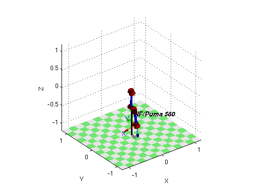 Simulacoes em malha aberta seção 6.4
T = [0 0 0 0 0 0];
Sem atrito seco e viscoso
Simulacao 1
q0 = [0 0 0 0 0 0] %Posicao inicial qd0 = [0 0 0 0 0 0] %Velocidade inicial [time, qdyn, qddyn] = p560.nofriction('all').fdyn(30, @ConstTau, q0, qd0, T); sime1ode = figure; plot(time, qdyn); xlabel('Tempo(s)') ylabel('Angulo(rad)') title('Resposta de q') legend('q_1', 'q_2', 'q_3', 'q_4', 'q_5', 'q_6'); saveas(sime1ode,'sime1ode.eps','epsc') sime1kin = figure; m = p560.nofriction('all').inertia(qdyn); e = zeros(1, length(qdyn)); for i = 1:length(qdyn) e(i) = 1/2*qddyn(i,:)*m(:,:,i)*qddyn(i,:)'; end plot(time, e); xlabel('Tempo(s)') ylabel('Energia(J)') title('Energia cinetica do sistema') saveas(sime1kin,'sime1kin.eps','epsc') figure, p560.plot(qdyn, 'delay', 5/length(time))
q0 =
0 0 0 0 0 0
qd0 =
0 0 0 0 0 0
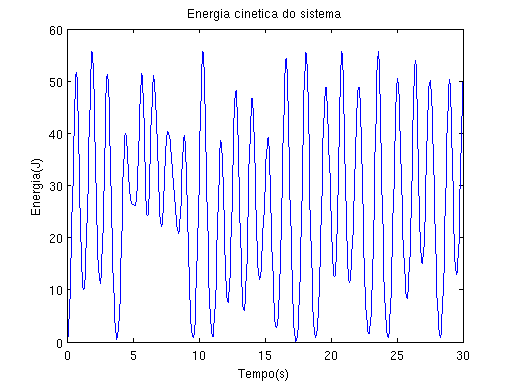 
Simulacao 2
q0 = [0 0.000001 0 0 0 0] %Posicao inicial qd0 = [0 0 0 0 0 0] %Velocidade inicial [time, qdyn, qddyn] = p560.nofriction('all').fdyn(30, @ConstTau, q0, qd0, T); sime2ode = figure; plot(time, qdyn); xlabel('Tempo(s)') ylabel('Angulo(rad)') title('Resposta de q') legend('q_1', 'q_2', 'q_3', 'q_4', 'q_5', 'q_6'); saveas(sime2ode,'sime2ode.eps','epsc') sime2kin = figure; m = p560.nofriction('all').inertia(qdyn); e = zeros(1, length(qdyn)); for i = 1:length(qdyn) e(i) = 1/2*qddyn(i,:)*m(:,:,i)*qddyn(i,:)'; end plot(time, e); xlabel('Tempo(s)') ylabel('Energia(J)') title('Energia cinetica do sistema') saveas(sime2kin,'sime2kin.eps','epsc') figure, p560.plot(qdyn, 'delay', 30/length(time))
q0 =
1.0e-06 *
0 1.0000 0 0 0 0
qd0 =
0 0 0 0 0 0
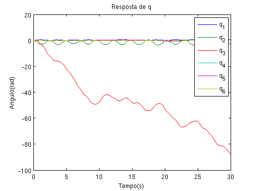 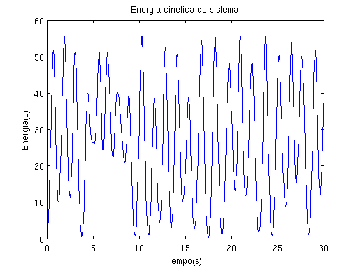 
Com atrito
Simulacao 1
q0 = [0 0 0 0 0 0] %Posicao inicial qd0 = [0 0 0 0 0 0] %Velocidade inicial [time, qdyn, qddyn] = bot.fdyn(5, @ConstTau, q0, qd0, T); sime1odea = figure; plot(time, qdyn); xlabel('Tempo(s)') ylabel('Angulo(rad)') title('Resposta de q') legend('q_1', 'q_2', 'q_3', 'q_4', 'q_5', 'q_6'); saveas(sime1odea,'sime1odea.eps','epsc') sime1kina = figure; m = bot.inertia(qdyn); e = zeros(1, length(qdyn)); for i = 1:length(qdyn) e(i) = 1/2*qddyn(i,:)*m(:,:,i)*qddyn(i,:)'; end plot(time, e); xlabel('Tempo(s)') ylabel('Energia(J)') title('Energia cinetica do sistema') saveas(sime1kina,'sime1kina.eps','epsc') figure, bot.plot(qdyn, 'delay', 5/length(time))
q0 =
0 0 0 0 0 0
qd0 =
0 0 0 0 0 0
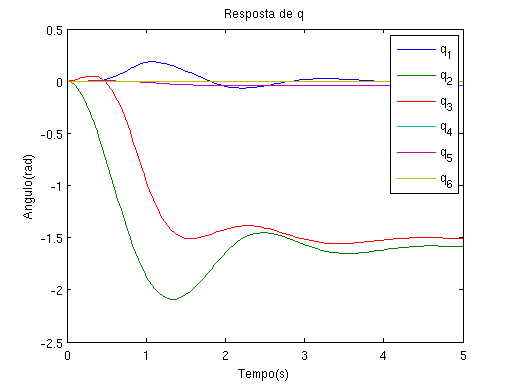 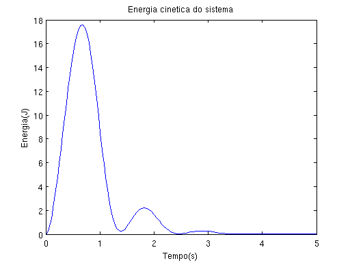 Simulacao 2
q0 = [0 0.000001 0 0 0 0] %Posicao inicial qd0 = [0 0 0 0 0 0] %Velocidade inicial [time, qdyn, qddyn] = bot.fdyn(5, @ConstTau, q0, qd0, T); sime2odea = figure; plot(time, qdyn); xlabel('Tempo(s)') ylabel('Angulo(rad)') title('Resposta de q') legend('q_1', 'q_2', 'q_3', 'q_4', 'q_5', 'q_6'); saveas(sime2odea,'sime2odea.eps','epsc') sime2kina = figure; m = bot.inertia(qdyn); e = zeros(1, length(qdyn)); for i = 1:length(qdyn) e(i) = 1/2*qddyn(i,:)*m(:,:,i)*qddyn(i,:)'; end plot(time, e); xlabel('Tempo(s)') ylabel('Energia(J)') title('Energia cinetica do sistema') saveas(sime2kina,'sime2kina.eps','epsc') figure, bot.plot(qdyn, 'delay', 5/length(time))
q0 =
1.0e-06 *
0 1.0000 0 0 0 0
qd0 =
0 0 0 0 0 0
Simulacoes em malha fechada
Analisando o robo na posição com o braço esticado ao longo do eixo X, como foi feito na tese temos:
bot.rne(qs, zeros(1,6), zeros(1,6)) % Comparamos esse valor com o valor que é apresentado na equação 6.21 e % estimamos que os torques com que nós trabalhamos são aproximadamente 3 % vezes menores que os torques que foram trabalhados na tese. % Sabendo disso escolhemos matrizes de ganho proporcional e derivativo % porpocionais às matrizes apresentadas nas equações 6.59 e 6.60, porém 3 % vezes menores. Kp = 50/3*eye(6,6); Kp(6,6) = 60/3; Kp Kd = 20/3*eye(6,6); Kd(6,6) = 22/3; Kd % Removemos o termo gravitacional assim como foi feita na tese para % simplificar nosso controlador e acelerar a simulação, poderiamos manter % esse termo se somassemos bot.gravload(q) ao esforço de controle gravity = bot.gravity; bot.gravity = [0;0;0];
ans =
-0.0000 46.0069 8.7722 0.0000 0.0283 0
Kp =
16.6667 0 0 0 0 0
0 16.6667 0 0 0 0
0 0 16.6667 0 0 0
0 0 0 16.6667 0 0
0 0 0 0 16.6667 0
0 0 0 0 0 20.0000
Kd =
6.6667 0 0 0 0 0
0 6.6667 0 0 0 0
0 0 6.6667 0 0 0
0 0 0 6.6667 0 0
0 0 0 0 6.6667 0
0 0 0 0 0 7.3333
Simulaçao 1
q0 = [0 0 0 0 0 0] %Posicao inicial qd0 = [0 0 0 0 0 0] %Velocidade inicial qref = [pi/2 0 -pi/2 pi pi/2 -pi] %Posicao desejada [time, qdyn, qddyn] = bot.fdyn(5, @PDControler, q0, qd0, qref, Kp, Kd); sim1cl = figure; plot(time, qdyn); xlabel('Tempo(s)') ylabel('Angulo(rad)') title('Resposta de q') legend('q_1', 'q_2', 'q_3', 'q_4', 'q_5', 'q_6'); saveas(sim1cl,'sim1cl.eps','epsc') sim1clu = figure; effort = zeros(size(qddyn)); for i = 1:length(qdyn) effort(i, :) = PDControler(0, 0, qdyn(i,:), qddyn(i,:), qref, Kp, Kd); end plot(time, effort); xlabel('Tempo(s)') ylabel('Torque(Nm)') title('Esforço de Controle') legend('\tau_1', '\tau_2', '\tau_3', '\tau_4', '\tau_5', '\tau_6'); saveas(sim1clu,'sim1clu.eps','epsc') figure, bot.plot(qdyn, 'delay', 5/length(time))
q0 =
0 0 0 0 0 0
qd0 =
0 0 0 0 0 0
qref =
1.5708 0 -1.5708 3.1416 1.5708 -3.1416
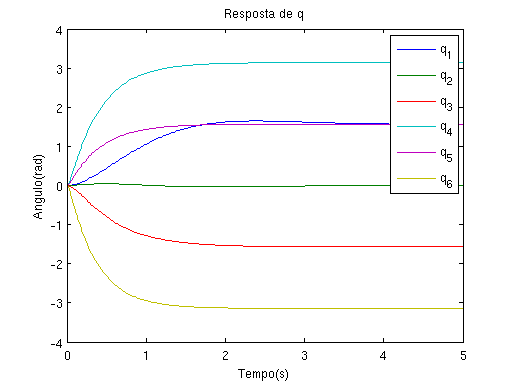 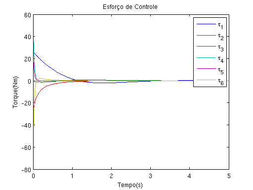 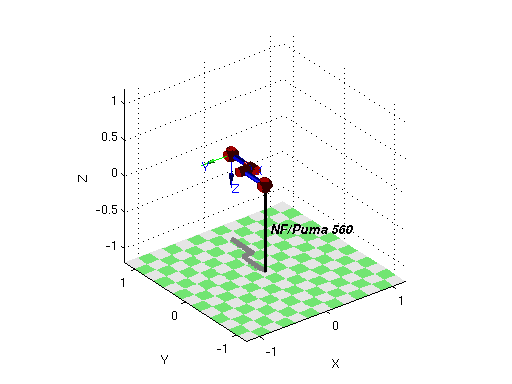 Simulaçao 2
q0 = [0 pi -pi/2 0 0 0] %Posicao inicial qd0 = [0 0 0 0 0 0] %Velocidade inicial qref = [pi 0 0 pi -pi/2 0] %Posicao desejada [time, qdyn, qddyn] = bot.fdyn(5, @PDControler, q0, qd0, qref, Kp, Kd); sim1cl = figure; plot(time, qdyn); xlabel('Tempo(s)') ylabel('Angulo(rad)') title('Resposta de q') legend('q_1', 'q_2', 'q_3', 'q_4', 'q_5', 'q_6'); saveas(sim1cl,'sim1cl.eps','epsc') sim1clu = figure; effort = zeros(size(qddyn)); for i = 1:length(qdyn) effort(i, :) = PDControler(0, 0, qdyn(i,:), qddyn(i,:), qref, Kp, Kd); end plot(time, effort); xlabel('Tempo(s)') ylabel('Torque(Nm)') title('Esforço de Controle') legend('\tau_1', '\tau_2', '\tau_3', '\tau_4', '\tau_5', '\tau_6'); saveas(sim1clu,'sim1clu.eps','epsc') figure, bot.plot(qdyn, 'delay', 5/length(time))
q0 =
0 3.1416 -1.5708 0 0 0
qd0 =
0 0 0 0 0 0
qref =
3.1416 0 0 3.1416 -1.5708 0
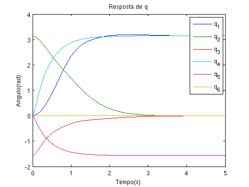 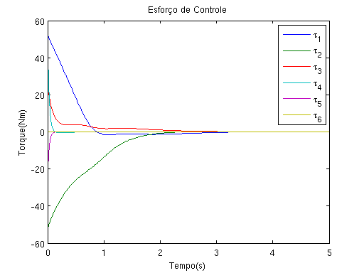 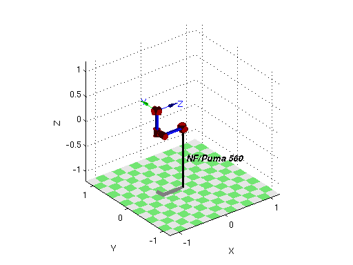 Simulaçao 3
q0 = [0 pi/2 -pi/2 0 0 0] %Posicao inicial qd0 = [0 0 0 0 0 0] %Velocidade inicial qref = [-pi pi -pi -pi -pi/2 pi] %Posicao deseijada [time, qdyn, qddyn] = bot.fdyn(5, @PDControler, q0, qd0, qref, Kp, Kd); sim1cl = figure; plot(time, qdyn); xlabel('Tempo(s)') ylabel('Angulo(rad)') title('Resposta de q') legend('q_1', 'q_2', 'q_3', 'q_4', 'q_5', 'q_6'); saveas(sim1cl,'sim1cl.eps','epsc') sim1clu = figure; effort = zeros(size(qddyn)); for i = 1:length(qdyn) effort(i, :) = PDControler(0, 0, qdyn(i,:), qddyn(i,:), qref, Kp, Kd); end plot(time, effort); xlabel('Tempo(s)') ylabel('Torque(Nm)') title('Esforço de Controle') legend('\tau_1', '\tau_2', '\tau_3', '\tau_4', '\tau_5', '\tau_6'); saveas(sim1clu,'sim1clu.eps','epsc') figure, bot.plot(qdyn, 'delay', 5/length(time))
q0 =
0 1.5708 -1.5708 0 0 0
qd0 =
0 0 0 0 0 0
qref =
-3.1416 3.1416 -3.1416 -3.1416 -1.5708 3.1416
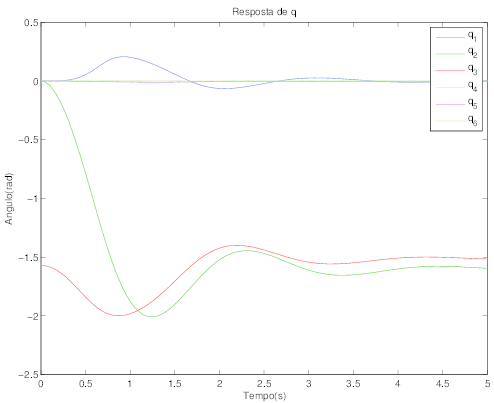 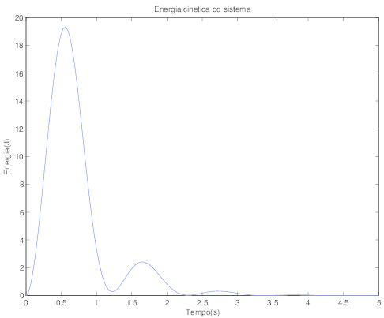 Fix eps
Necessário para concertar encoding imagens exportadas no formato .eps no linux
!epsfixer.sh